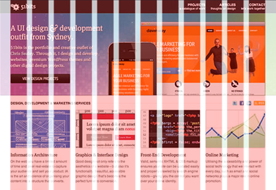
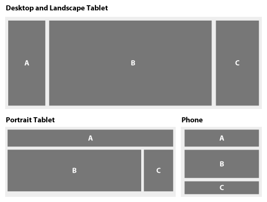

Become a Web Design Hipster
Narciso Jaramillo
Principal Scientist, Web Platform and Authoring
nj@adobe.com
@notwebsafe
Modern web design is hard!


Modern web design is easy!
...or, <img> is dead
(mostly)
Box decorations
CSS#sample-deco {
background: linear-gradient(to bottom, #7abcff 0%, #60abf8 44%,
#4096ee 100%);
border-radius: 20px;
box-shadow: 0px 0px 8px 0px rgba(0, 0, 0, 0.6);
}
Not quite that simple...
CSS#sample-gradient {
background: #7abcff; /* Old browsers */
background: -moz-linear-gradient(top, #7abcff 0%, #60abf8 44%, #4096ee 100%); /* FF3.6+ */
background: -webkit-gradient(linear, left top, left bottom, color-stop(0%,#7abcff), color-stop(44%,#60abf8), color-stop(100%,#4096ee)); /* Chrome,Safari4+ */
background: -webkit-linear-gradient(top, #7abcff 0%,#60abf8 44%,#4096ee 100%); /* Chrome10+,Safari5.1+ */
background: -o-linear-gradient(top, #7abcff 0%,#60abf8 44%,#4096ee 100%); /* Opera 11.10+ */
background: -ms-linear-gradient(top, #7abcff 0%,#60abf8 44%,#4096ee 100%); /* IE10+ */
background: linear-gradient(to bottom, #7abcff 0%,#60abf8 44%,#4096ee 100%); /* W3C */
filter: progid:DXImageTransform.Microsoft.gradient( startColorstr='#7abcff', endColorstr='#4096ee',GradientType=0 ); /* IE6-9 */
}
Web fonts
CSS@font-face {
font-family: forque;
src: url('Forque-webfont.eot');
src: url('Forque-webfont.eot?#iefix') format('embedded-opentype'),
url('Forque-webfont.woff') format('woff'),
url('Forque-webfont.ttf') format('truetype'),
url('Forque-webfont.svg#firsttestRegular') format('svg');
}
#sample-font {
font-family: forque;
}
Animation and Transforms
CSS#sample-anim {
position: relative; width: 100px; height: 98px;
background: url("images/adobe-logo.png") 100% 100% no-repeat;
transition: all 1s;
}
#sample-anim.moved {
left: 600px;
transform: rotateX(60deg);
}JavaScriptvar animBox = document.getElementById("sample-anim");
animBox.onclick = function () {
animBox.className = animBox.className ? "" : "moved";
}Layout
or, living with the box model
Grid systems
HTML<div class="row">
<div class="span4">
...
</div>
<div class="span8">
...
</div>
</div>
<div class="row">
<div class="span8 offset2">
...
</div>
</div>
Designing for multiple screens
Adaptive design: @media
CSS#a { float: left; }
#c { float: right; }
@media only screen and (max-width: 768px) {
#a { float: none; }
}
@media only screen and (max-width: 480px) {
#c { float: none; }
}
Responsive design
- Fit breakpoints to the design, not the device
- Use fluid sizing:
CSS.span1 { width: 5.982905982905983%; } #hero-image { max-width: 100%; }
Best practices
or, content is king
Semantic HTML
Non-semantic<div class="nav">
<div class="navBox">
<a href="home.html" onmouseover="...">
<img src="homeButton.png">
</a>
</div>
<div class="navBox">
<a href="products.html" onmouseover="...">
<img src="productsButton.png"></a>
</div>
<!-- ... -->
</div>Semantic<nav>
<ul>
<li><a href="home.html">Home</a></li>
<li><a href="products.html">Products</a></li>
<!-- ... -->
</ul>
</nav>Progressive enhancement
HTML<nav>
<ul>
<li><a href="home.html">Home</a></li>
<li><a href="products.html">Products</a></li>
<!-- ... -->
</ul>
</nav>CSSnav li {
display: inline-block;
list-style-type: none;
}
nav li a {
background: linear-gradient(top, #d0e4f7 0%, #73b1e7 80%, ...
}
JavaScript$("nav a").mouseover(function () {
// ...
});Mobile-first/Content-first
- Think about content structure first
- Basic content order = mobile version
- Enhance layout for larger devices
jQuery
Selecting elements
JavaScriptvar animBox = document.getElementById("sample-anim");
animBox.onclick = function () {
animBox.className = animBox.className ? "" : "moved";
}
JavaScript$("#sample-anim")
.click(function () {
$(this).toggleClass("moved");
});Multiple selection and chaining
JavaScript$(".someClass")
.addClass("shown")
.fadeIn()
.click(function () { /* ... */ })
.mouseover(function () { /* ... */ });Graphics
Canvas
HTML<canvas id="canvas" width="150" height="150"></canvas>JavaScriptfunction draw() {
var canvas = document.getElementById('canvas');
if (canvas.getContext) {
var ctx = canvas.getContext("2d");
ctx.fillStyle = "rgb(200,0,0)";
ctx.fillRect (10, 10, 55, 50);
ctx.fillStyle = "rgba(0, 0, 200, 0.5)";
ctx.fillRect (30, 30, 55, 50);
}
}Native SVG support
HTML<object data="myImage.svg" type="image/svg+xml"></object>CSS#myBox {
background: url(myImage.svg);
}HTML<img src="myImage.svg">HTML<body>
<h1>SVG can be inline in HTML5 documents</h1>
<svg height="200" xmlns="http://www.w3.org/2000/svg">
<circle cx="30" cy="30" r="30" fill="green" />
</svg>
</body>WebGL
JavaScriptvar canvas = document.getElementById("glcanvas");
gl = canvas.getContext("webgl")
|| canvas.getContext("experimental-webgl");
if (gl) {
gl.clearColor(0.0, 0.0, 0.0, 1.0);
gl.enable(gl.DEPTH_TEST);
gl.depthFunc(gl.LEQUAL);
gl.clear(gl.COLOR_BUFFER_BIT|gl.DEPTH_BUFFER_BIT);
// ...
}Not implemented in IE currently. (Maybe never.)
Tools
In-browser tools
Boilerplates and frameworks
- HTML5 Boilerplate
- Twitter Bootstrap
- Zurb Foundation
- Modernizr and polyfills
Preprocessors
CSS#header {
border-radius: 5px;
-webkit-border-radius: 5px;
-moz-border-radius: 5px;
}
#header .somechild {
font-size: 12px;
}
#footer {
border-radius: 10px;
-webkit-border-radius: 10px;
-moz-border-radius: 10px;
}LESS.rounded-corners (@rad: 5px) {
border-radius: @rad;
-webkit-border-radius: @rad;
-moz-border-radius: @rad;
}
#header {
.rounded-corners;
.somechild {
font-size: 12px;
}
}
#footer {
.rounded-corners(10px);
}Edge Tools from Adobe
Edge Animate
Edge Reflow
Edge Code /
Brackets
Edge Inspect
Edge Web Fonts
Typekit
PhoneGap Build